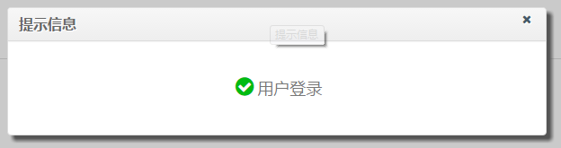
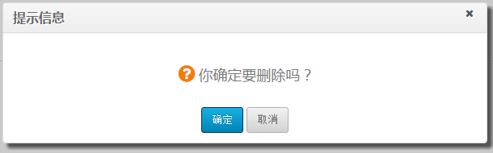

$.fn.dialog()
参考 jquery 1.4 对话框参数设计
【定义】 文件：xiunoui/dialog.js：
$.fn.dialog = function(settings) {
// ... 具体源代码参看 dialog.js
}
【用法】
<div class="dialog" id="dialog1" title="对话框标题" style="display: none;">文字HTML等内容...</div>
<script src="xiunoui/jquery-1.11.1.js"></script>
<script src="xiunoui/xiuno.js"></script>
<script src="xiunoui/dialog.js"></script>
<script>
// 弹出指定的 div
$('#id1').dialog();
$('#id1').dialog('open');
$('#id1').dialog('close');
$('#id1').dialog({ modal: true });
$('#id1').dialog({ title: 'Dialog Title' });
$('#id1').dialog({ width: 460});
// 模仿三种标准对话框
$.box('用户登录用户登录用户登录');
$.box('用户登录用户登录用户登录', 'ok');
$.box('用户登录用户登录用户登录', 'error');
$.box('用户登录用户登录用户登录', 'error', function() {alert('closed');});
$.alert('用户登录用户登录用户登录');
$.alert('用户登录用户登录用户登录', 'ok');
$.alert('用户登录用户登录用户登录', 'error');
$.alert('用户登录用户登录用户登录', 'error', function() {alert('closed');});
$.confirm('用户登录用户登录用户登录');
$.confirm('用户登录用户登录用户登录', function() {alert('ok');}, function() {alert('cancel');});
// ajax dialog
$.ajax_dialog('http://www.xxx.com/', true, {});
</script>
效果
$.box('用户登录', 'ok');

$.confirm('确定删除吗？', function() {alert('ok');}, function() {alert('cancel');});
